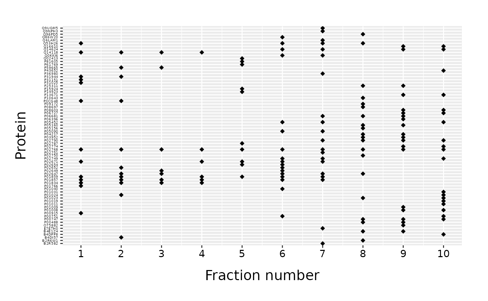
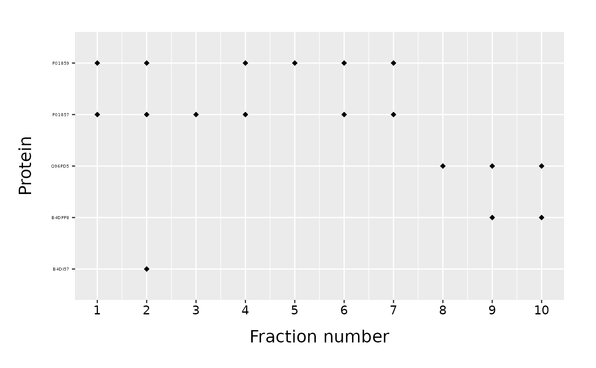
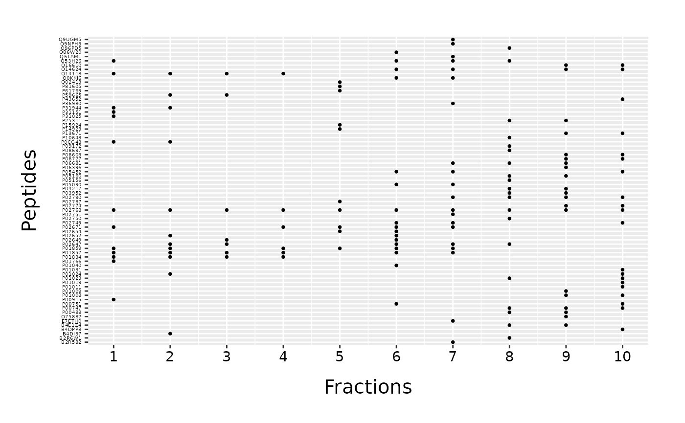
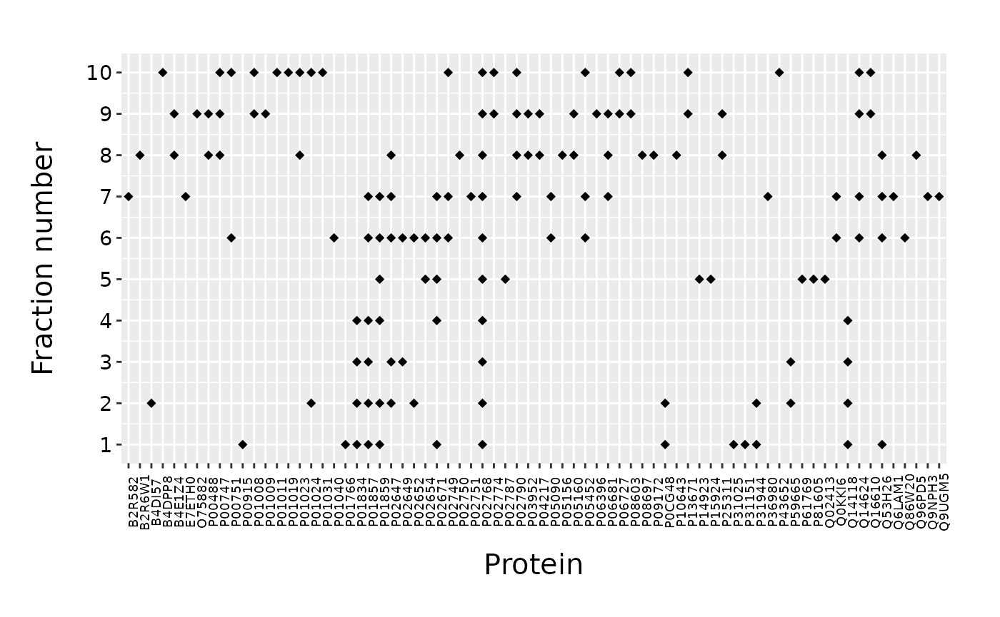
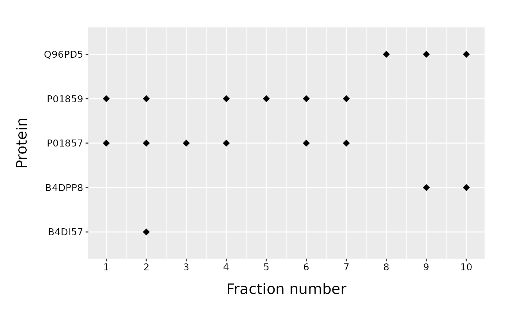
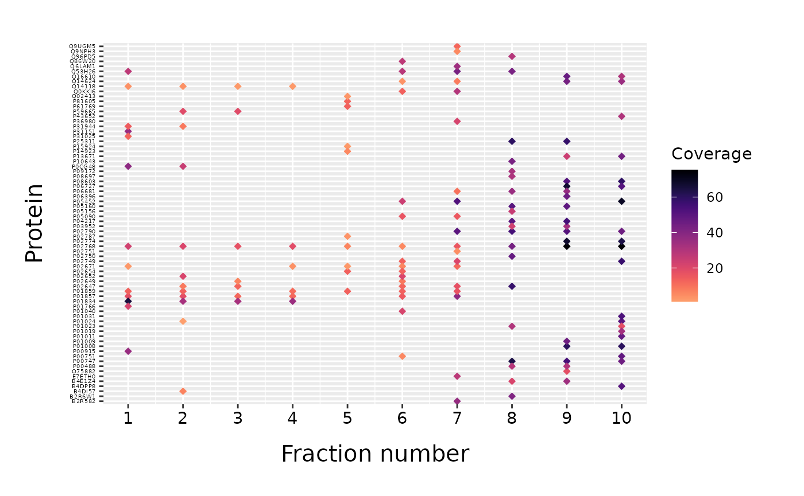
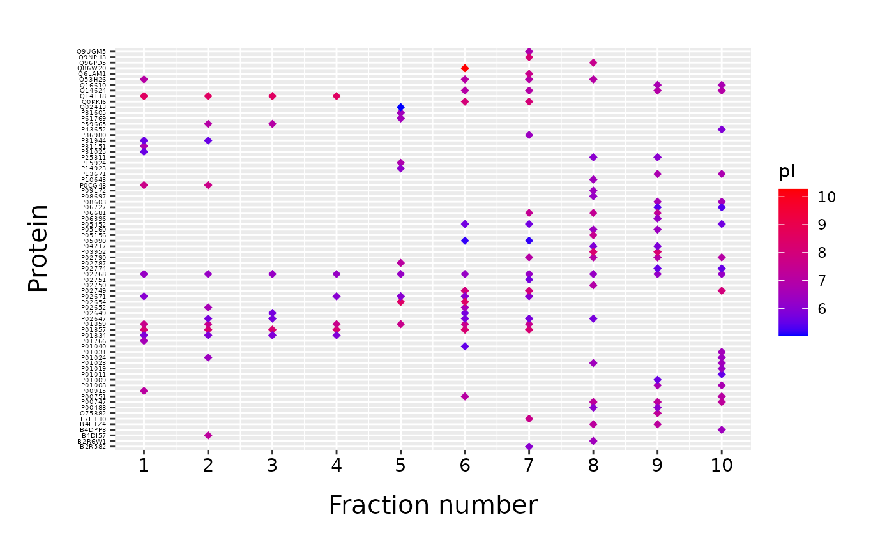

Visualize and explore fractions
vis-fractions.RmdFractionation of a sample is an important step of many proteomic studies. Different sample fractionation strategies use different properties of proteins to separate a complex proteomic sample into fractions prior to the mass spectrometry analysis. This step is necessary for in-depth proteomic studies where low abundant proteins of interest are being masked by highly abundant proteins (Bailey et al. 2006).
Here we introduce two functions which explore the results of the proteomic fractionation. Function fracPlot creates a protein vs. fraction scatter plot of all proteins detected in a sample (Plotting the fractionated sample). Additionally, different properties of detected proteins can be depicted using the color. For a tabular representation of properties of the proteins found in fractions, the function fracTable may be used (Tabular representation of the fractionated sample). First, for functions to be visible, the package has to be loaded.
library(visProteomics)Data preparation
To visualize or explore the results of sample fractionation, we need one tidy data frame with all proteins from all fractions listed in rows and with two required columns, one giving the protein ID and another with the number of fraction in which the protein is detected. Additional columns with further protein description can be added and used in visualization/exploration.
If instead of a single data frame, a separate data frame exists for every fraction, read vignette merge-fractions. In merge-fractions vignette, two data frames included in the visProteomics package are constructed. These data frames are here used to demonstrate the use of the visProteomics functions.
Plotting the fractionated sample
For visual representation of the proteins detected in a fractionated sample, we use the fracPlot function. The plot helps to visually identify which proteins are detected in which fraction and to make a comparison among fractions. If certain property of a protein, such as isoelectric point (pI) of a protein, is used in a process of fractionation, then this should be easily observable using the fracPlot. Moreover, false positive protein matches can be identified as outliers if exceptable pI values of a fraction are known.
A minimal example
For a basic usage of the fracPlot we only need a data frame with two columns: one with protein IDs and another with fraction number. Default names of the two columns are “Accession” and “Fraction_Numer”. To call a fracPlot we provide data frame (“data”), the name of a column with protein IDs (“protein_column”) and the name of a column with fraction number (“fraction_column”).
fracPlot(data=data_top20, protein_column="Accession", fraction_column="Fraction_Number")
We obtain a scatter plot with fractions on x-axis and proteins on y-axis. Protein IDs are used as axis labels in alphabetical order.
Plotting a subset of proteins
We can plot only a subset of proteins found in a data frame specifying the “list_of_proteins” parameter.
proteins_to_plot = c("B4DI57", "B4DPP8", "Q96PD5", "P01857", "P01859", "false_protein")
fracPlot(data_total, protein_column="Accession", fraction_column="Fraction_Number", list_of_proteins=proteins_to_plot)
As we noticed, only proteins found in a data frame will be plotted. Proteins on a y-axis are again in alphabetical order. If instead, we want to keep the order of a “list_of_proteins”, we have to set the parameter “order_proteins” to FALSE.
proteins_to_plot = c("B4DI57", "B4DPP8", "Q96PD5", "P01857", "P01859", "false_protein")
fracPlot(data_total, protein_column="Accession", fraction_column="Fraction_Number", list_of_proteins=proteins_to_plot, order_proteins=FALSE)
If order of proteins is important, we can plot all proteins in “data” and specify their order using the “list_of_proteins”.
Changing the function parameters
We can customize fracPlot parameters to customize and improve the plot.
By default, proteins are plotted in a diamond shape. This can be changes with “mark_shape” argument. Instead of a diamond shape, we can use circle setting the parameter to \(16\). All possible shapes can be checked in ggplot2 point shapes. Default size of a marker is \(2\), but it can be adjusted with “mark_size” parameter. We can also change the names of axes with “protein_name” and “fraction_name” parameters.
fracPlot(data_top20, protein_column="Accession", fraction_column="Fraction_Number", mark_shape=16, mark_size=1, protein_name="Peptides", fraction_name="Fractions") 
If instead of a default layout, we want to plot proteins on x-axis and fractions on y-axis, we have to set “fraction_position” to “y”.
fracPlot(data_top20, protein_column="Accession", fraction_column="Fraction_Number", fraction_position="y") 
The size of axis labels can also be easily adjusted. If fractions are plotted on x-axis, the default size of protein IDs is \(4\). If instead proteins are plotted on x-axis, the default size of their IDs is \(7\). The default size for fraction number is \(11\) in both cases. In some cases we may want to adjust these sizes to improve the readability of labels. For example, if only small number of proteins is plotted we can increase the size of their labels.
proteins_to_plot = c("B4DI57", "B4DPP8", "Q96PD5", "P01857", "P01859")
fracPlot(data_total, protein_column="Accession", fraction_column="Fraction_Number", list_of_proteins=proteins_to_plot, protein_labels_size=10, fraction_labels_size=10, mark_size=3)
Representation of an additional protein attribute
If certain protein attribute is given as a column of data frame, it can be used to color the points in a fracPlot scatter plot. The column is given as “color_column” parameter. The legend is automatically added to the plot and its title can be changed with “color_name” parameter.
fracPlot(data_top20, protein_column="Accession", fraction_column="Fraction_Number", color_column="Sum_Coverage", color_name="Coverage")
Using the functionalities of ggplot2
fracPlot is based on ggplot2 (Wickham 2016) which allows us to use functionalities of ggplot2 to make additional adjustements to our plot. For example, we can easily change the color scheme using the “scale_color_gradient” function from ggplot2.
fracPlot(data_top20, protein_column="Accession", fraction_column="Fraction_Number", color_column="pI") +
ggplot2::scale_color_gradient(low = "#0000ff", high = "#ff0000")
#> Scale for 'colour' is already present. Adding another scale for 'colour',
#> which will replace the existing scale.
Saving the plot
fracPlot return a ggplot2 object. To save the plot to file, we use the ggplot2 function “ggsave”.
fraction_plot <- fracPlot(data_top20, protein_column="Accession", fraction_column="Fraction_Number")
output_filename <- "./plots/fraction_plot.png" #name of the plot together with the path
fraction_plot
ggplot2::ggsave(output_filename, width=14, height=8, units="in")Tabular representation of the fractionated sample
If there are predefined bins for a certain property of a protein, function fracTable counts the number of proteins inside each bin for each fraction. The resulting data frame gives numerical comparison among fractions. Sample fractionation can be done using some known protein property, such as isoelectric point (pI) of a protein. In such case, the result of fracTable can be used to validate the results.
For example, if known bins for pI are \([5,6\rangle\), \([6,7\rangle\), \([7,8\rangle\) and \([8,9]\), we define bins as a vector with all delimiters between bins including the first and the last interval ends: \(5,6,7,8,9\). For a function call, we need a data frame “data” with all proteins in rown. We also have to specify the column which holds the fraction number with “fraction_column” and the column which includes the binning values with “column_to_bin”. The vector of bin limits is an argument to “finite_bin_limits” parameter.
bin_limits <- c(5,6,7,8,9)
fraction_table <- fracTable(data_top20, fraction_column="Fraction_Number", column_to_bin="pI", finite_bin_limits=bin_limits)
fraction_table
#> Fraction_Number bin:5-6 bin:6-7 bin:7-8 bin:8-9 total min_pI max_pI
#> 1 1 3 4 4 2 13 5.58 8.56
#> 2 2 3 4 3 2 12 5.58 8.56
#> 3 3 3 2 0 2 7 5.73 8.56
#> 4 4 1 2 1 2 6 5.87 8.56
#> 5 5 1 6 2 1 10 5.03 8.47
#> 6 6 5 4 4 3 16 5.15 10.27
#> 7 7 4 6 7 3 20 5.15 8.19
#> 8 8 2 10 7 1 20 5.76 8.22
#> 9 9 4 10 5 1 20 5.38 8.22
#> 10 10 5 11 4 0 20 5.38 7.97
#> total NA 31 59 37 17 144 NA NAThe resulting data frame has all fractions as rows and bins as columns. Additional columns report total number of proteins in fraction, minimum and maximum value of the binning property within the fraction. If there were some NA values, their number per fraction would have been reported in additional column “NA_values”. The last row sums the total number of proteins per column.
In case a binning property doesn’t have a minimum value, negative infinity can be included as a lower limit of the leftmost bin setting “include_negInf” to TRUE. Similarly, we can include positive infinity with “include_Inf”.
bin_limits <- c(6,7,8)
fraction_table <- fracTable(data_top20, fraction_column="Fraction_Number", column_to_bin="pI", finite_bin_limits=bin_limits, include_negInf=TRUE)
fraction_table
#> Fraction_Number bin:-Inf-6 bin:6-7 bin:7-8 total min_pI max_pI
#> 1 1 3 4 4 11 5.58 8.56
#> 2 2 3 4 3 10 5.58 8.56
#> 3 3 3 2 0 5 5.73 8.56
#> 4 4 1 2 1 4 5.87 8.56
#> 5 5 1 6 2 9 5.03 8.47
#> 6 6 5 4 4 13 5.15 10.27
#> 7 7 4 6 7 17 5.15 8.19
#> 8 8 2 10 7 19 5.76 8.22
#> 9 9 4 10 5 19 5.38 8.22
#> 10 10 5 11 4 20 5.38 7.97
#> total NA 31 59 37 127 NA NAReferences
Bailey, Jerome, Peter Mrozinski, Tocias Preckel, Christine Miller, James Martosella, and Robert Kincaid. 2006. “New Sample Fractionation Strategies for Proteomic Analyses by Lc-Ms.” LC GC Magazine-North America-Solutions for Separation Scientists 34: 16–23.
Wickham, Hadley. 2016. Ggplot2: Elegant Graphics for Data Analysis. Springer-Verlag New York. https://ggplot2.tidyverse.org.